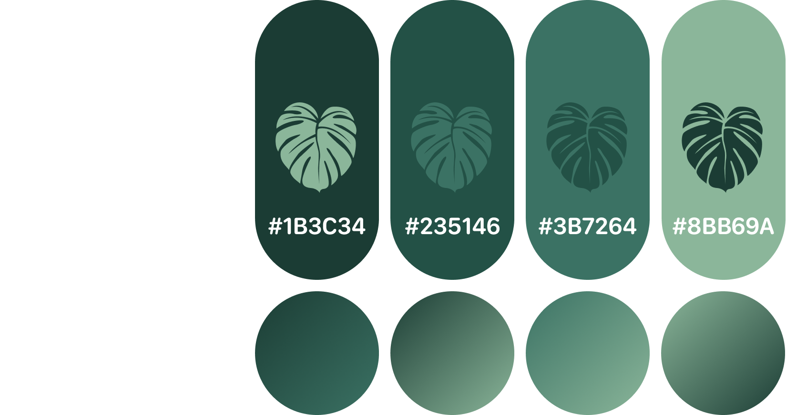

GrowNote — Landing Page
A marketing landing page designed to introduce the app, communicate its value, and encourage users to download it.

Problem
Many landing pages fail to clearly communicate the value of a product, making it difficult for users to quickly understand what the app does and why they should use it.
They can also feel cluttered or overwhelming, which reduces engagement and lowers conversion rates.
Process
I started by structuring the page into clear sections to guide users from introduction to action. The focus was on creating a logical flow that presents the product, highlights key features, builds trust, and encourages downloads.
Low-fidelity layouts helped define hierarchy and spacing before refining the visual style and components in high-fidelity designs.

Visual Identity

Design
The final design uses a nature-inspired colour palette and soft shapes to create a calm and approachable feel that aligns with the plant care theme.
A clear visual hierarchy and section-based layout guide users through the content, from introduction to features, testimonials, and download options.
Key features include:
- A strong hero section that communicates the app’s value immediately
- Feature highlights to showcase key benefits
- Testimonials to build trust and credibility
- A clear call to action encouraging users to download the app
- A clean and responsive layout for better readability
Result
The final landing page presents the product in a clear and engaging way, helping users quickly understand its purpose and benefits.
It creates a smooth flow from awareness to action, encouraging users to explore the app and download it.
This project helped me explore how layout, hierarchy, and content structure can improve communication and conversion in landing pages.